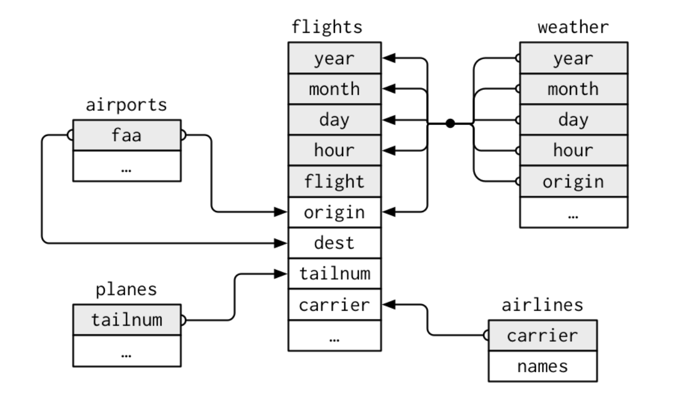

if(!require(tidyverse)) install.packages("tidyverse")
library(tidyverse)MGMT 17300: Data Mining Lab
Data Wrangling
Overview
XXXX
XXXX
“Happy families are all alike; every unhappy family is unhappy in its own way.”
— Leo Tolstoy
“Tidy datasets are all alike; every messy dataset is messy in its own way.”
— Hadley Wickham
Tidy Data
Tidy Data vs. Messy Data
In the real world, most data will not be in the format we desire. In this class, we will learn how to process data so that it becomes tidy according to our objectives.

Tidyverse
Tidyverse
All the tools we will see are part of the tidyverse, a set of packages for data manipulation.
This set of packages follows principles that are becoming the standard for data analysis in R.

Pipe

Pipe
The %>% or |> makes the order of operations clearer, making code easier to read and understand.
# A random vector
x <- c(1:10)
# A simple calculation with complicated code
sum(sqrt(factorial(x)))
# The same calculation with %>%
x %>% factorial() %>% sqrt() %>% sum()Data Wrangling
What is Data Wrangling?
Data Wrangling (Data Cleaning / Data Munging):
The process of transforming raw, messy data into a clean and structured format that is ready for analysis.It often involves:
- Handling missing values
- Correcting inconsistencies
- Reshaping data from wide to long formats (or vice versa)
- Filtering, arranging, and summarizing data
Why is it Important?
Improved Data Quality:
Reliable analyses start with clean, accurate, and consistent data.Efficiency in Analysis:
Data prepared in a structured and “tidy” format reduces the time spent fixing errors and allows focus on actual insights.Better Decision Making:
High-quality, well-structured data leads to more meaningful interpretations, stronger conclusions, and actionable insights.
Loading Data
It is advisable to adopt a project-based workflow in your data analysis (Workflow: projects).
Using a consistent project structure optimizes collaboration and sharing of your analysis.
For this lecture, we will use the
nycflights13package, which comes with several related datasets about flights departing from NYC in 2013.
Loading Data
if(!require(nycflights13)) install.packages("nycflights13")
library(nycflights13)
# The main dataset we'll use is flights
flights <- nycflights13::flightsThe flights dataset includes information on all US domestic flights departing NYC in 2013. Some key variables include:
year,month,day: date of departuredep_delay,arr_delay: departure and arrival delays in minutescarrier: airline carrieroriginanddest: origin and destination airports
Verbs in the Tidyverse
In the tidyverse, we use verbs (functions) that describe step-by-step data manipulation tasks:
filter(): Select rowsarrange(): Sort observationsselect()andrename(): Select or rename columns
mutate(): Create new variablescase_when(): Recode variables
summarise()andgroup_by(): Summarize informationpivot_wider()andpivot_longer(): Reshape dataleft_join(): Merge datasets- Combine different steps using the
%>%or|>
Selecting Columns with select()
The flights dataset has many columns. We can choose only the ones we need:
# Select only a few important columns
flights %>%
select(year, month, day, dep_delay, arr_delay)
# Select all columns except a few
flights %>%
select(-tailnum, -time_hour)Selecting Columns with select()
# Select columns that start with 'arr'
arr_data <- flights %>%
select(starts_with("arr"))
# Rearrange the order of variables
flights_reordered <- flights %>%
select(carrier, flight, everything())Renaming Variables with rename()
If we want to rename a variable:
# IMPORTANT: the new name is given first
flights %>%
rename(airline = carrier) %>%
select(airline, flight, dep_delay)Creating Variables with mutate()

Creating Variables with mutate()
We can create new variables based on existing ones. For example, create a total delay variable:
flights %>%
mutate(total_delay = arr_delay + dep_delay) %>%
select(year, month, day, carrier, total_delay)Creating Variables with transmute()
transmute() works similarly, but keeps only the newly created variables:
flights %>%
transmute(total_delay = arr_delay + dep_delay)Recoding Variables with case_when()
We can recode continuous variables into categories. For example, classify flights as “On Time” if arr_delay <= 0 and “Delayed” otherwise:
flights %>%
mutate(status = case_when(
arr_delay <= 0 ~ "On Time",
TRUE ~ "Delayed"
)) %>%
select(year, month, day, carrier, arr_delay, status)Recoding Variables with case_when()
We can also have more complex conditions:
flights %>%
mutate(delay_category = case_when(
arr_delay <= 0 ~ "On Time",
arr_delay <= 30 ~ "Short Delay",
TRUE ~ "Long Delay"
)) %>%
select(year, month, day, carrier, arr_delay, delay_category)Selecting Cases with filter()

Selecting Cases with filter()
We can select rows based on conditions. For example, flights in January:
flights %>%
filter(month == 1)Or flights in January operated by United Airlines (carrier “UA”):
flights %>%
filter(month == 1 & carrier == "UA")Remembering Logical Operators

&means AND|means OR!means NOT
Selecting Cases with filter()
We can store results in a new object using logical operators:
jan_ua_flights <- flights %>%
filter(month == 1 & carrier == "UA")Sorting Observations with arrange()

Sorting Observations with arrange()
We can sort rows. For example, sort by departure delay ascending:
flights %>%
arrange(dep_delay) %>%
select(carrier, flight, dep_delay)Sorting Observations with arrange()
For descending order:
flights %>%
arrange(desc(arr_delay)) %>%
select(carrier, flight, arr_delay)Summarizing Information with summarise() and group_by()
summarise() computes summary statistics. Paired with group_by(), it creates summaries within groups. For example, find the average departure delay by airline carrier:
flights %>%
group_by(carrier) %>%
summarise(mean_dep_delay = mean(dep_delay, na.rm = TRUE)) %>%
drop_na()Useful functions include mean(), sum(), median(), sd(), n(), and n_distinct().
Other Functions for Grouping
group_by() can be combined with other operations:
flights_group <- flights %>%
group_by(month, carrier) %>%
summarise(mean_arr_delay = mean(arr_delay, na.rm = TRUE),
mean_dep_delay = mean(dep_delay, na.rm = TRUE)) %>%
arrange(mean_arr_delay) %>%
ungroup()
flights_groupAfter grouping and summarizing, always ungroup() to return to the normal structure.
Reshaping Data with pivot_wider() and pivot_longer()
Let’s create a summary and then reshape it. For example, find the average arrival delay by carrier and month, then pivot to a wide format.
Our data is currently in long format.
pivot_wider(): from long to wide
# Create a summary of mean arrival delay by carrier and month
delay_summary <- flights %>%
group_by(carrier, month) %>%
summarise(mean_arr_delay = mean(arr_delay, na.rm = TRUE)) %>%
ungroup()
# Pivot wider: carriers in rows, months in columns
delay_wide <- delay_summary %>%
pivot_wider(names_from = month, values_from = mean_arr_delay)
delay_widepivot_longer(): from wide to long
If we want to go back to the long format:
delay_long <- delay_wide %>%
pivot_longer(cols = -carrier, names_to = "month", values_to = "mean_arr_delay")
delay_longMerging Datasets
“There are two certainties in life: death and bad merges”
Merging Datasets

The flights dataset can be connected to others:
- flights connects to
planesby:tailnum. - flights connects to
airlinesby:carrier. - flights connects to
airportsby:originanddest. - flights connects to
weatherby:origin,year,month,day,hour.
Commands for Joining

Commands for Joining full_join()
Commands for Joining inner_join()
Commands for Joining right_join()
Commands for Joining left_join()
Merging Datasets: Example
For instance, to attach airline names to flights:
flights_with_names <- flights %>%
left_join(airlines, by = "carrier")
head(flights_with_names)Additional Material
Some interesting resources:
Summary
Summary
- Using the
%>%or|>to streamline code - Selecting and renaming columns
- Filtering and sorting rows
- Creating and recoding variables
- Summarizing groups of observations
- Reshaping data from long to wide and back
- Joining multiple datasets for richer analysis